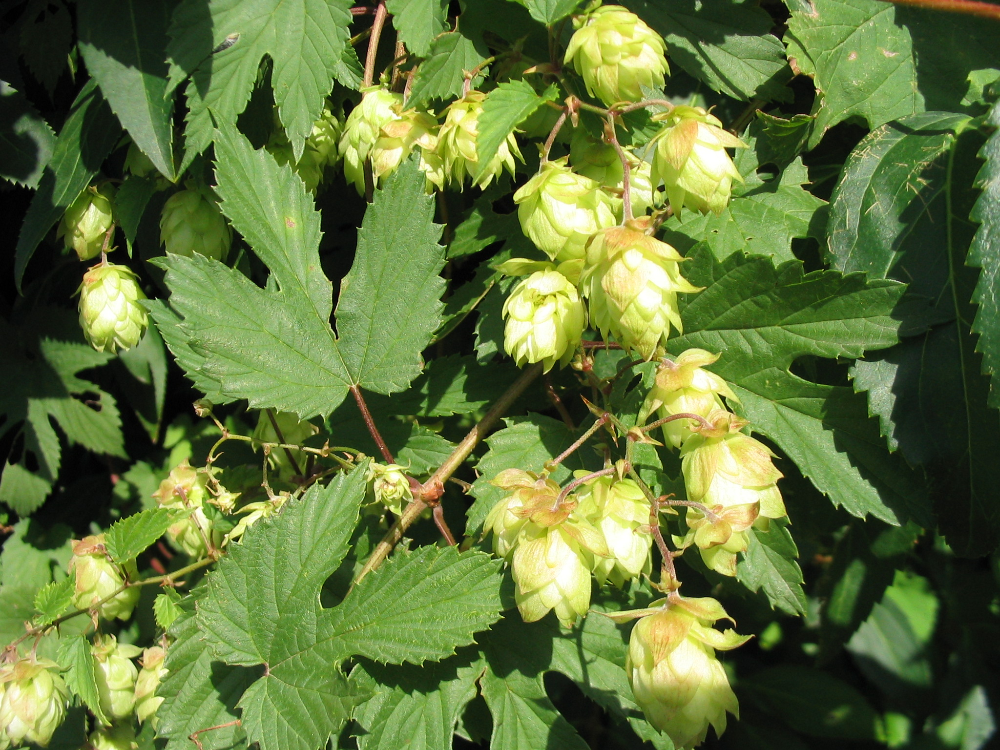
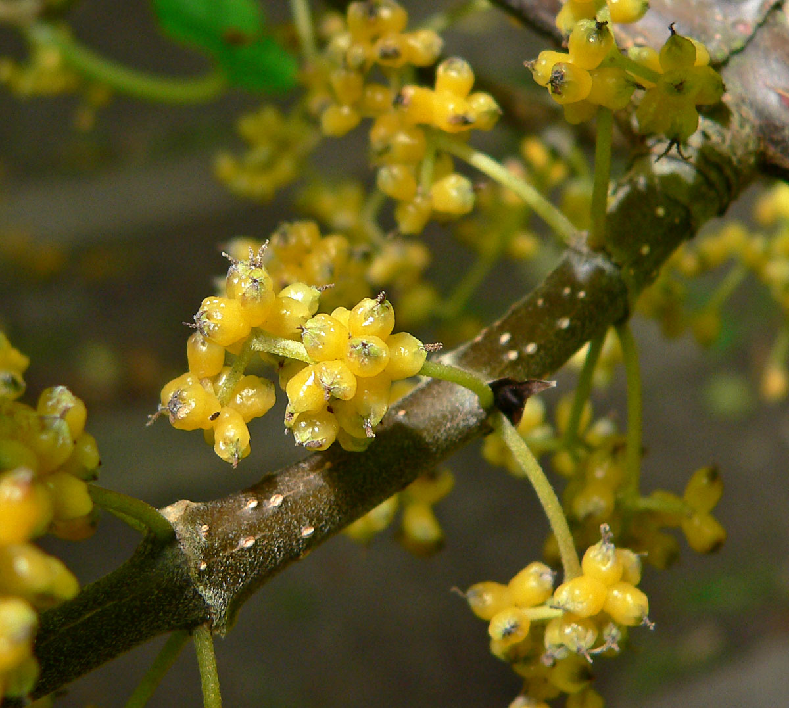

Cannabaceae
hemp family
 Cannabis sativa (marijuana) from Wikimedia Commons by Thayne Tuason - Own work, CC BY-SA 4.0 |
 Humulus lupulus (hops) from Wikimedia Commons by Hagen Graebner, CC BY-SA 2.5 |
 Celtis sinensis (Japanese/Chinese hackberry) from Wikimedia Commons by 문화재청, KOGL Type 1 |
 Lozanella enantiophylla from Wikimedia Commons by Stan Shebs, CC BY-SA 3.0 |
{kind=link}
{kind=link}
botanical characteristics
Botany in a Day, p. 89 | "Cannabaceae", Wikipedia
- growth form
- varied: some are herbaceaous plants (e.g., Cannabis) while others are trees (e.g., Celtis)
- often dioecious (male and female flowers form on separate plants)
- stems/leaves
- leaves are often more or less palmately lobed or palmately compound and always bear stipules
- cystoliths are always present and some members of this family possess laticifers
- flowers
- flowers are not particularly showy
- male flowers grow in loose racemes or panicles and have 5 sepals and 0 petals
- female flowers grown in dense clusters (sometimes hidden by leafy bracts) with 5 sepals and 0 petals
- reproductive structures
- male flowers have 5 stamens
- ovary is positioned superior and consists of 2 united carpels
- matures as an achene (dry seed) or a drupe
distribution
"Cannabaceae", Wikipedia
- 170 species grouped in about 11 genera
"Cannabis", Wikipedia | "Humulus", Wikipedia | "Celtis", Wikipedia
- Cannabis is indigenous to and originating from the continent of Asia
- Humulus is native to West Asia, Europe, and North America
- Celtis is widespread throughout tropical and temperate parts of the world, occurring on all continents except Antarctica
ecological roles
"Cannabaceae", Wikipedia
- flowers not particularly showy, pollinated by the wind
"Celtis", Wikipedia
- some species, including common hackberry (C. occidentalis) and C. brasiliensis, are honey plants and a pollen source for honeybees
- Celtis species are used as food plants by the caterpillars of certain Lepidoptera, including brush-footed butterflies, most importantly the distinct genus Libythea (beak butterflies) and some Apaturinae (emperor butterflies)
common pharmacological constituents
"Angiosperm families - Cannabidaceae Endl.", DELTA
- not cyanogenic; alkaloids present; iridoids not detected; saponins/sapogenins absent; proanthocyanidins present (Humulus), or absent (Cannabis); cyanidin and delphinidin (Humulus); flavonols present; kaempferol, or kaempferol, quercetin, and myricetin; ellagic acid absent (both genera); sieve-tube plastids S-type (with starch)
patterns in medicinal actions
- Cannabis and Humulus both strongly affect the nervous system
- both are analgesic and antispasmodic and can be sedative
- soothing effect on the digestive system
- associated with intoxication/altered states
- strong, unique aromas
traditional/cultural uses
"Cannabaceae", Wikipedia
- carbon dating shows that these plants may have been used for ritual/medicinal purposes in Xinjiang, China as early as 494 B.C
- Humulus lupulus has been the predominant bittering agent of beer for hundreds of years
- the flowers' resins are responsible for beer's bitterness and their ability to extend shelf life due to some antimicrobial qualities
- the young shoots can be used as a vegetable
- some plants in the genus Cannabis are cultivated as hemp for the production of fiber, as a source of cheap oil, for their nutritious seeds, or their edible leaves
- others are cultivated for medical or recreational use as dried flowers, extracts, or infused food products
- many trees in the genus Celtis are grown for landscaping and ornamental purposes, and the bark of Pteroceltis is used to produce high-end Chinese paper
warnings
"Cannabis", Wikipedia
- according to Delphic analysis by British researchers in 2007, cannabis has a lower risk factor for dependence compared to both nicotine and alcohol
- however, everyday use of cannabis may be correlated with psychological withdrawal symptoms, such as irritability or insomnia, and susceptibility to a panic attack may increase as levels of THC metabolites rise
- cannabis withdrawal symptoms are typically mild and are not life-threatening
"Humulus lupulus", Wikipedia
- Humulus lupulus can cause dermatitis to some who handle them
extra information
"Cannabaceae", Wikipedia | Botany in a Day, p. 89
- other than a shared evolutionary origin, members of the family have few common characteristics
- the 'traditional' Cannabaceae family only consisted of Cannabis and Humulus; now it includes hackberries (Celtis) and a handful of other genera from the closely related Ulmaceae (elm) family
prominent genera
- Cannabis (marijuana)
- Celtis (hackberries)
- Humulus (hops)
plant highlights
see list of materia medica entries here
Cannabis spp.
 from Wikimedia Commons by Davidi1326 - Own work, CC BY-SA 4.0 |
common names: cannabis, marijuana en español: cáñamo, marihuana |
description
"Cannabis", Wikipedia
- annual, dioecious, flowering herb
- leaves are palmately compound or digitate, with serrate leaflets
- the first pair of leaves usually have a single leaflet, the number gradually increasing up to a maximum of about thirteen leaflets per leaf (usually seven or nine), depending on variety and growing conditions
- at the top of a flowering plant, this number again diminishes to a single leaflet per leaf
- lower leaf pairs usually occur in an opposite leaf arrangement and the upper leaf pairs in an alternate arrangement on the main stem of a mature plant
- leaves have a peculiar and diagnostic venation pattern (which varies slightly among varieties) that allows for easy identification of Cannabis leaves from unrelated species with similar leaves
- all known strains are wind-pollinated and the fruit is an achene
- predominantly dioecious, having imperfect flowers, with staminate 'male' and pistillate 'female' flowers occurring on separate plants
distribution
"Cannabis", Wikipedia
- indigenous to and originating from the continent of Asia
- widely cultivated for industrial and recreational uses
medicinal/magical uses
"Cannabis", Wikipedia
- cannabis was presumably employed by the ancient Jushi culture in the Turfan district of the Xinjiang Uyghur Autonomous Region in northwest China as a medicinal or psychoactive agent, or an aid to divination
- settlements which date from c. 2200–1700 BCE in the Bactria and Margiana contained elaborate ritual structures with rooms containing everything needed for making drinks containing extracts from poppy (opium), hemp (cannabis), and ephedra (which contains ephedrine)
- referred to in Hindu Vedas between 2000 and 1400 BCE, in the Atharvaveda; by the 10th century CE, it has been suggested that it was referred to by some in India as 'food of the gods'
- in Buddhism, cannabis is generally regarded as an intoxicant and may be a hindrance to development of meditation and clear awareness
- in ancient Germanic culture, cannabis was associated with the Norse love goddess, Freya
- the Rastafari movement has embraced cannabis as a sacrament
- since the 13th century CE, cannabis has been used among Sufis
- hemp has been used by many civilizations, from China to Europe (and later North America) during the last 12,000 years: the stem for fibre, the seeds for their oils, the leaves for use as vegetables and juice
preparation methods
- smoke
- oil
warnings
"Cannabis", Wikipedia
- everyday use of cannabis may be correlated with psychological withdrawal symptoms, such as irritability or insomnia, and susceptibility to a panic attack may increase as levels of THC metabolites rise
sources
"Angiosperm families - Cannabidaceae Endl." on DELTA - DEscription Language for TAxonomy. Retrieved 19 August 2025.
"Cannabaceae" on Wikipedia. Retrieved 20 August 2025.
"Cannabis" on Wikipedia. Retrieved 20 August 2025.
"Celtis" on Wikipedia. Retrieved 20 August 2025.
Easely, Thomas and Steven Horne. The Modern Herbal Dispensatory (2016)
Elpel, Thomas J. Botany in a Day: The Patterns Method of Plant Identification (2021)
Goldberg Blackthorn, Samantha. Ace of Cups Herbal Medicine and Botanical Magic Herbal School (2024)
"Humulus" on Wikipedia. Retrieved 20 August 2025.
"Humulus lupulus" on Wikipedia. Retrieved 20 August 2025.
Mabey, Richard et al. The New Age Herbalist (1988)